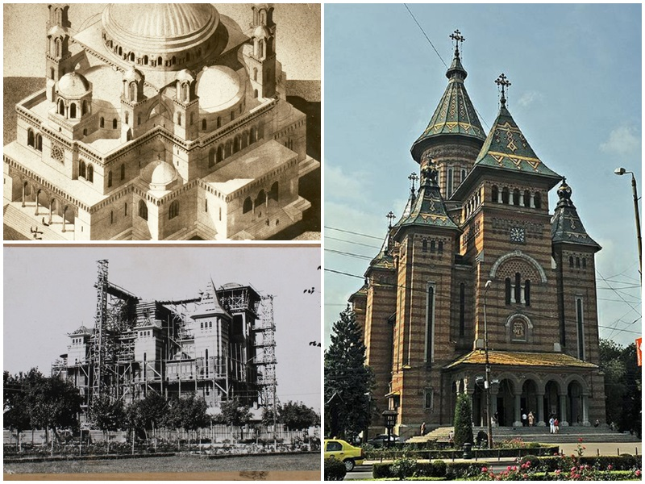

Catedrala Mitropolitană din Timișoara este cel mai mare edificiu religios din Timișoara, catedrală a Mitropoliei Banatului, cu hramul „Trei Ierarhi”. A fost construită între 1936 și 1941 și este un simbol al orașului. Este în prezent cea mai înaltă biserică din România (90,5 m), și cea mai înaltă biserică ortodoxă din lume din afara Rusiei (Dacă luăm în considerare Rusia și Georgia, Catedrala din Timișoara este pe locul al optulea în lume).
Istoria edificiului este strâns legată de anul 1919 când, pe data de 28 iulie, Banatul se unește cu România. Noua administrație românească reia firul ortodoxiei rupt în 1717[3] și ia o serie de măsuri pentru încurajarea ortodoxiei, defavorizată de administrația austriacă, favorabilă religiei catolice. Astfel se reînființează vechea parohie din Cetate în 1926, apoi Episcopia de Timișoara în 1939, ridicată la rangul de arhiepiscopie, iar în 1947 se creează Mitropolia Banatului. Pe acest fond se simte tot mai acută nevoia unui lăcaș central pentru credincioșii din parohia Cetate, ce frecventau mai ales biserica Sf.Ilie din cartierul Fabric și ulterior pentru o catedrală reprezentativă, pe măsura consistentei comunități ortodoxe din Timișoara și din Banatul românesc. Parohia din Cetate instituie un fond de zidire a biserici și lansează un apel către publicul românesc pentru donații. În 1936 existau deja toate premisele construirii monumentului. Fondul de zidire era deja consistent, deși suma totală necesară era imensă pentru acea vreme. Terenul necesar, situat la încrucișarea celor mai importante artere ale orașului a foste donat de către Primărie, iar proiectul bisericii era încredințat încă din 1934 lui Ion Traianescu. Proiectul prevedea un edificiu cu o capacitate de 5.000 de persoane. Construcția propriu-zisă a început pe 16 martie 1936 iar în 20 decembrie s-a pus printr-o ceremonie piatra fundamentală a viitoarei Catedrale.[1] Lucrările de construcție s-au terminat în 1941.[2] Clopotele și crucile bisericii au fost sfințite în 23 august 1938. Toate finisajele, picturile interioare și exterioare s-au terminat însă abia în 1956, din cauza celui de-al doilea război mondial. Catedrala a fost inaugurată în data de 6 octombrie 1946 în prezența Regelui Mihai, a primului-ministru Petru Groza, a patriarhului Nicodim Munteanu, a mitropolitului Nicolae Bălan al Ardealului și a reprezentanților altor culte, în frunte cu episcopii romano-catolic Augustin Pacha și greco-catolic Ioan Bălan.